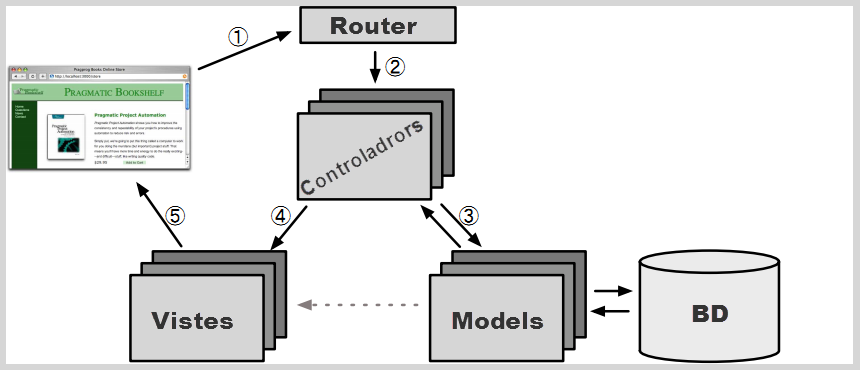
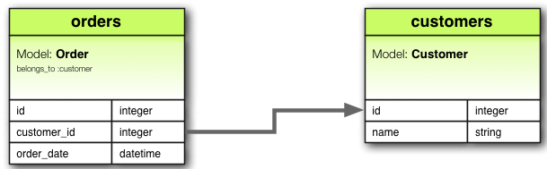
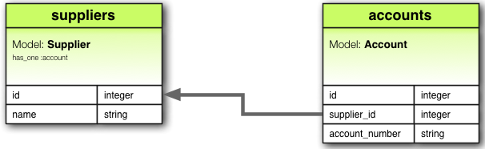
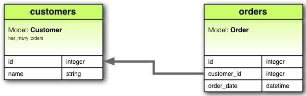
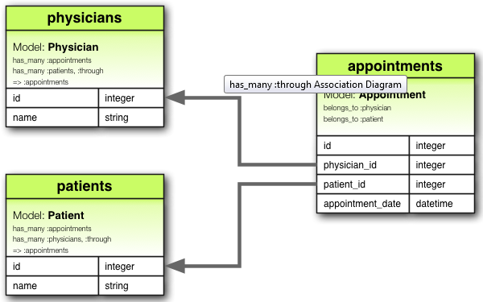
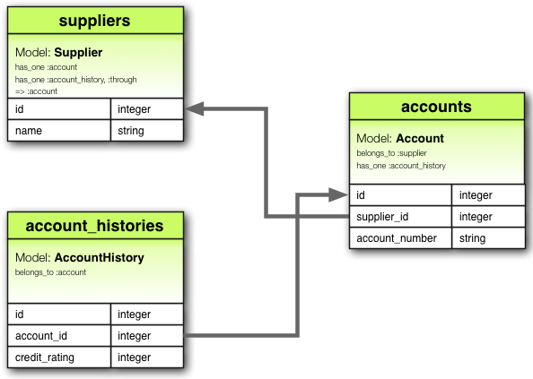
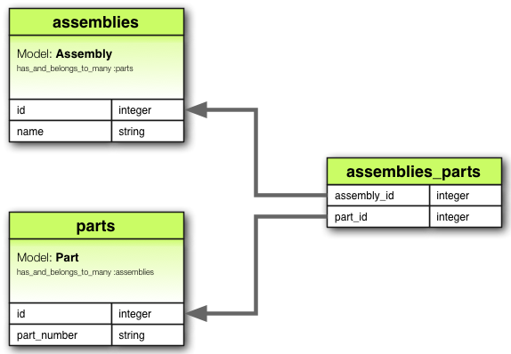
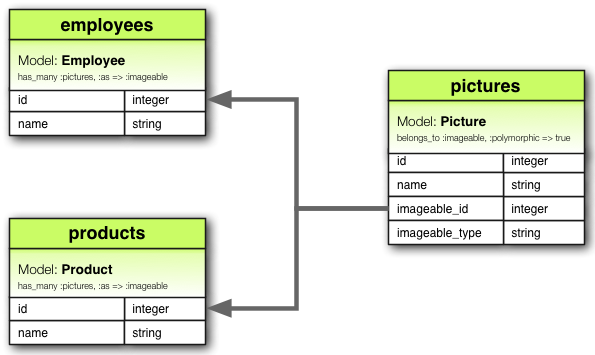

Rails desde Zero
Instal.lació
Instal.lació
- Git
- Eines d'entorn
- RVM, Gemsets i Ruby
- Bundler
- Rails
Instal.lació
1. Git
Git es pot instal.lar directament descarregant-lo de la web (binari o per compilar)
ó, mitjançant un gestor de paquets
OSX
$ brew install gitLinux
$ sudo apt-get install git-coreInstal.lació
2. Eines d'entorn
Instal.lacio
2. Eines d'entorn
- GCC i llibreries
- Motor de BD i/o bindings per a Ruby
Instal.lacio
2. Eines d'entorn
GCC i llibreries
OSX
Directament vía XCode (versió >= 4.1.x) ó només el compilador desde http://git.io/osxgcc
Linux
Compilador GCC + eines
$ sudo apt-get install build-essentialLlibreries bàsiques
$ sudo apt-get install bison openssl libreadline6
libreadline6-dev curl zlib1g zlib1g-dev libssl-dev
libyaml-dev libxml2-dev libxslt-dev autoconfInstal.lacio
2. Eines d'entorn
Motor de BD i/o bindings per a Ruby
OSX
"Homebrew is the easiest and most flexible way to install the UNIX tools Apple didn't include with OS X."
https://github.com/mxcl/homebrew/wiki/installation
Un cop instal.lat...
$ brew install sqlite3ó
$ brew install postgresqlLinux
Utilitzant el gestor de paquets de la nostra distribució (en aquest cas, debian)
SQLite 3
$ sudo apt-get install libsqlite3-0 libsqlite3-dev sqlite3PostgreSQL
$ sudo apt-get install postgresql postgresql-client postgresql-doc
libpq-devImagemagick
$ sudo apt-get install imagemagick libmagickcore-dev libmagickwand-devEtcétera
$ sudo apt-get install blah blah blah ...Instal.lacio
3. RVM, Gemsets i Ruby
RVM
http://beginrescueend.com/
Instal.lem via
$ bash < <(curl -s https://raw.github.com/wayneeseguin/rvm/master/binscripts/rvm-installer)Per a que RVM es carregui automàticament a cada sessió de terminal
$ echo '[[ -s "$HOME/.rvm/scripts/rvm" ]] && . "$HOME/.rvm/scripts/rvm" ' >> ~/.bash_profileComprobar que està instal.lat correctament
$ type rvm | head -1Ruby
Un cop RVM está funcionant i passa a gestionar-nos les nostres instal.lacions dels diferents intèrprets de ruby ja podem procedir a instal.lar-lo
Llistar els diferents intèrprets de Ruby coneguts
$ rvm list known
...Instal.lar una versió de ruby
$ rvm install 1.9.3
$ ruby -v
ruby 1.9.3p0 (2011-10-30 revision 33570) [x86_64-darwin11.2.0]Utilitzar un ruby (instalat previament)
$ rvm use 1.9.2
Using /Users/user/.rvm/gems/ruby-1.9.2-p290
$ ruby -v
ruby 1.9.2p290 (2011-07-09 revision 32553) [x86_64-darwin11.0.0]
$ rvm use 1.9.3 --default
Using /Users/user/.rvm/gems/ruby-1.9.3-p0Gemsets
RVM ens proporciona entorns de ruby compartimentalitzats i independents. El que vol dir que l'intèrpret de ruby, les gemes i l'irb están tots separats i auto-continguts. Del sistema i entre ells.
Crear un gemset
$ rvm gemset create rails31
Gemset 'rails31' created.Utilitzar-lo
$ rvm use 1.9.3@rails31
Using /Users/user/.rvm/gems/ruby-1.9.3-p0 with gemset rails31
$ gem install blah
...
$ gem install bluh
...Instal.lacio
4. Bundler
Bundler
Bundler gestiona les dependències d'una aplicació durant tot el seu cicle de vida i a través de totes les màquines d'una forma sistemàtica i repetible.
$ gem install bundler --no-rdoc --no-riTambé podem instal.lar-lo en el gemset especial '@global' per a tenir-lo sempre disponible.
$ rvm use 1.9.3@global
$ gem install bundler --no-rdoc --no-ri
$ rvm use 1.9.3@[el gemset que teniem definit]Instal.lacio
5. Rails
Rails
$ gem install rails
...
Rails desde Zero
Rails desde Zero
Aplicació en 5 minuts
Aplicació en 5 minuts
Tot seguit prepararem una petita aplicació per a gestionar llistes de tasques.
1
Creem una nova aplicació Rails i ens situem en el seu directori
$ rails new todos
...
$ cd todos2
Generem un "scaffold" (model, vista i controlador) per a generar ràpidament el codi necessari per a una senzilla llista de tasques
$ rails g scaffold todo name:string due_on:date completed:boolean
...3
Executem la migració de la base de dades
$ bundle exec rake db:migratei 5.
Rails desde Zero
Nocions de Ruby
Ruby
- Generic, interpretat, GC
- Sintaxi neta
- Completament OO - TOT és un objecte (primitives, classes i nil)
- Permet programar en format procedural i funcional
- Tipus de dades dinàmics ("duck typing")
Ruby
http://ruby-doc.org/
Irb
Irb és la interfície interactiva a Ruby
Executar en una finestra del terminal
$ irbS'utilitza, principalment, per a testejar petits trocets de codi.
Introduccio a la sintaxi
Identificadors
MyClass, MyModule
PI = 3.141592
un_metode
variable_local = 12
@variable_instancia
@@variable_classe
$variable_globalTipus de dades
En ruby tot és un objecte. Provem el següent en una sessió de Irb
123.class
nil.class
true.class
"hola mundo!".class
:symbol.classCertesa
- En ruby els únics valors que s'evaluen com a fals són:
false, nil - A diferència d'altres llenguatges ón el zero (0) ó una cadena buida ("") s'evaluen com a fals
nil
- L'absència d'un objecte en ruby es representa mitjançant la paraula
reservada
nil nilés la única instancia deNilClass < Object < BasicObjectnils'evalua com a fals
Constants
Les constants sempre comencen per una lletra majúscula
Constant = 12 # Aixó és una constant
constant = 12 # Aixó no, és una variableOperadors
Assignació
Mitjançant el signe d'igualtat (=)
color = "vermell"
un_altre_color = "blau"
numero = 123Operadors
Auto-assignació
x = 1 # => 1
x += x # => 2
x -= x # => 0
x += 4 # => 4
x *= x # => 16
x **= x # => (16^16)
x /= x # => 1No hi ha operadors d'increment o decrement (++) en Ruby
Operadors
Assignació múltiple
color1, color2, color3 = "vermell", "blau", "verd"
colors, ciutat = ["vermell", "blau", "verd"], "Barcelona"Assignació condicional
config ||= "valor"L'operador ||= comproba si la variable és nula (o inexistent) i li
assigna el valor (objecte) especificat
Operadors
Comparació
== # => Equivalència
!= # => No igual
<, <= # => Més petit (o igual) que
>, >= # => Més gran (o igual) que
<=> # Combinat: 0 si iguals,
# -1 si el segon > que el primer
# 1 si el segon < que el primerOperadors
And (&&), Or (||), Not(!)
x = false
y = true
x && y # => false
X || y # => true
!x # => true
!y # => false
Tipus de dades
Nombres (Numeric)
- En ruby els nombres es representen mitjançant la classe
base
Numeric - La majoria dels nombres que ens trobarem són subclasses de
FixnumoFloat - També existeixen els tipus numérics:
BigDecimal, Complex, Rational
Nombres (Numeric)
Exemples
1 + 3 - 7
=> -3
3 / 4
=> 0
3 / 4.0
=> 0.75
3 * 3
=> 9
185 * 1.18
=> 218.3
12**2
=> 144
8 % 2
=> 0Nombres (Numeric)
El mòdul Math conté tot de funcions matemàtiques estándar
y = 144
x = Math.sqrt(y)
=> 12
Math.hypot(3, 4)
=> 5 # sqrt(x**2, y**2)Cadenes (String)
- Objectes de la classe
String - Soporta nativament UTF-8 i cadenes multi-byte
- Poden estar representades per comilles simples o dobles
- Operadors de concatenació i accés: +, <<, []
- Es poden interpolar amb l'expressió #{}
- Alguns mètodes útils de la classe
String:size, each_char, each_line, empty?, gsub, strip, upcase
Cadenes (String)
cadena = "Hola"
cadena << " Ruby"
cadena = cadena + "!"
puts cadenaCadenes (String)
# Amb entrecomillat doble,
# s'interpola l'expressió #{}
puts "Ara son les: #{Time.now}"
# Amb entrecomillat simple no
puts 'Ara son les #{Time.now}'Cadenes (String)
Podem utilitzar seqüències d'escapament (a la C)
puts "\t Prova\n"
puts 'Això és un \'EXEMPLE\''Cadenes (String)
Per accedir als caràcters podem utilitzar l'operador []
a = "Hola"
puts "a[1] == #{a[1]}"Utilitzar funcions de la classe String
a = "partirem aquesta cadena per espais".split(' ').join(', ')
puts a
=> "partirem, aquesta, cadena, per, espais"
b = "ho vull en majuscules".upcase
puts b
=> "HO VULL EN MAJUSCULES"
c = ""
puts c.empty?
=> true
c = "no buida"
puts c.empty?
=> falseSymbol (símbols)
- Són cadenes inmutables
- Es prefixen per mitjà de dos punts:
:un_simbol - S'utilitzen molts cops com a claus d'un Hash o per representar noms de mètodes o funcions
- Podem convertir cadenes i simbols entre si mitjançant:
to_sito_sym
Symbol (símbols)
a, b = "hola", "hola"
a == b
=> true
a.object_id == b.object_id
=> false
a, b = :hola, :hola
a == b
=> true
a.object_id == b.object_id
=> trueArray
Seqüències d'objectes dinàmiques (mida variable), sense tipus i indexades (desde zero)
Array i String comparteixen alguns operadors:
+, <<, []La classe
Arrayinclou el mòdulEnumerable, el que dona accés a un conjunt de mètodes com:each, select, map, inject, etc.
Array
Semàntica similar
a = ["Ruby", 3.141592]
a << "Rails"
puts a[1]
=> 3.141592
puts a[1..2]
puts a[1, 2]
b = [3, 4, 5, "vint-i-dos"]
puts a+bArray
Iterar els elements
c = ["pera", "poma", "pressec"]
c.each do |fruita|
puts "#{fruita.capitalize}, mmm..."
endUn "block" es pot entendre, de moment, com una funció (o métode) anónima
Array
El modul Enumerable conté un munt de funcions útils
c = [3, 3, 2, 1]
c.join(' | ')
c.map { |x| x**2 }
c.select { |x| x % 2 == 0 }
c.reject { |x| x < 3 }
c.inject { |sum, i| sum + i }
c.include?(2)
c.sort
c.uniq
c.uniq.select { |x| x < 3 }.sortHash
- Un hash és un array associatiu de parells clau-valor
- Com a clau podem utilitzar, gairebé, qualsevol objecte. Habitualment s'utilitzen symbols.
- La classe
Hashtambé inclou els mètodes del mòdulEnumerable.
Hash
Sintaxi
hash = {
:leia => "Princesa",
:han => "Rebel",
:luke => "Jedi"
}
puts hash[:luke]
=> "Jedi"Hash
Treballar amb els elements d'un Hash
hash = {}
hash[:han]
=> nil
hash[:han] = "Fugitiu"
=> "Fugitiu"
hash.delete(:han)
hash[:han]
=> nilHash
Iterar un hash
hash.each do |clau, valor|
puts "#{clau}: #{valor}"
end
# Accedir a les claus com un Array
hash.keys
=> [:leia, :han, :luke]Recordem que podem utilitzar els mètodes del mòdul Enumerable com map,
select, reject, ...
Rangs (Range)
- Un rang és un objecte que representa tots els valors dins d'un rang:
1..100 - Utiltizant 3 punts no inclou l'últim valor
1...100 - Alguns mètodes útils:
each, step, include? - Es poden crear rangs d'objectes propis sempre que implementin
els mètodes:
<=>isucc
Rangs (Range)
Sintaxi
a = 1..5
b = 1...5
a.to_a
=> [1,2,3,4,5]
b.to_a
=> [1,2,3,4]Podem iterar també els rangs
(1..100).each { |n| puts "#{n}" }
Estructures de control
Condicionals
- Clausules
if: if, elsif, else, end - Clasules
case - Les estructures condicionals retornen el valor de l'ultima expressió evaluada
- Operador ternari:
?
Condicionals
if
c = 10
if c > 10
puts "M'he passat!"
elsif c == 10
puts "He arribat!"
else
puts "Venint..."
endCondicionals
if
c = 100
missatge = if c == 100
"Has encertat"
else
"Has fallat"
endCondicionals
if
També es pot uitlitzar com a modificador de sentència
height = 1.62
puts "Que alt que ets!" if height >= 1.85També es pot utilitzar unless com a representació de if !(expr)
puts "Que alt que ets!" unless height < 1.85Condicionals
case
x = 17
case x
when 0
when 2..5
puts "Ah!"
when x.to_s.downcase == "Estanis"
puts "Ondia!"
else
puts "No res"
endBucles
- Les col.leccions basades en el mòdul
Enumerablenormalment es recorrent mitjançant el mètodeeach - Es pot utilitzar també l'expressió:
for..in - Similars a altres llenguages:
while, until
Bucles
Exemples
count = 0
while count < 3
puts count
count += 1
endTambé com a modificador de sentència
count = 0
puts count while (count < 3 && count += 1)Bucles
Exemples
Es pot utilitzar for..in per iterar col.leccions. Podem utiltizar
les paraules clau next i break dins dels bucles per a saltar-nos elements
i "trencar-los"
for value in [0, 1, 2, 3, 4]
next if value == 1
break if value == 3
puts value
endBucles
Exemples
count = 0
until count == 3
puts count
count += 1
endTambé com a modificador de sentència
count = 0
puts(count += 1) until count == 3Excepcions
Les excepcions es "llancen" mitjançant la instrucció raise
raise StandardError, "WTF!"i es capturen per mitjà del bloc begin..rescue..ensure..end
begin
# codi que pot fallar
rescue Exception => e
# si fallo, m'executo
ensure
# m'executo sempre
endPodem definir les nostres propies excepcions creant subclasses de les definides per Ruby
Excepcions
Exemple
url = "http://some.url"
attempts = 0
begin
contents = open(url).read
puts contents
rescue SocketError => e
puts "No he pogut obrir #{url}, intents: #{attempts}: #{e}"
attempts += 1
retry unless attempts >= 3
rescue Exception => e
puts "Error desconegut: #{e.message} #{e.backtrace.join("\n")}"
raise
ensure
puts "Sempre m'executo, passi el que passi"
end
Mètodes
Mètodes
Definició
def saluda(nom)
puts "Hola #{nom}!"
endEls parèntesis són opcionals tant en la definició com en la crida, pero poden ésser necessaris
saluda "Jordi"
=> "Hola Jordi!"
saluda("Jordi").downcase
=> "hola jordi!"Mètodes
Valors de retorn
Els mètodes en ruby sempre retornen el valor de l'última expressió evaluada (igual que en les sentències condicionals)
def suma(x, y)
x + y
endMètodes
Valors de retorn
També podem fer retornar un mètode de forma explícita mitjançant la
instrucció return
def authenticate(username)
return unless username == "jaume"
puts "Benvingut, Jaume!"
endMètodes
Paràmetres
Podem utilitzar qualsevol tipus d'objecte com a paremetre d'un mètode. Molt sovint
veurem que s'utilitzen objectes Hash.
Mètodes
def distancia(x=0, y=0)
Math.hypot(x, y)
end
def saluda(nom, opcions={})
es_de_nit = opcions[:nit] || false
if es_de_nit
puts "Bona nit, #{nom}!"
else
puts "Bon dia, #{nom}!"
end
endCom hem vist podem especificar valors per defecte en els parámetres
Clases
Clases
Definició
class Animal
def viu?
end
endClases
Variables
@variablerepresenta una variable d'instancia@@variablerepresenta una variable de classeselfrepresenta la instancia actual (this)
Clases
Variables
class Persona
@nom = "Estanis"
def saluda
"Hola #{@nom!}"
end
def renombra(nom)
@nom = nom
end
endClases
Variables
Com s'utilitza?
p = Persona.new
puts p.saluda # => "Hola Estanis!"
p.renombra("Jaume")
puts p.saluda # => "Hola Jaume!"Clases
Constructor
S'utilitza el mètode especial initialize que es crida sempre que creem
una nova instancia d'una classe.
class Persona
def initialize(nom)
@nom = nom
end
end
p = Persona.new("Estanis")Els objectes s'instancien amb el mètode new
Clases
Accedint a les variables d'instancia
class Persona
def initialize(nom)
@nom = nom
end
def nom
@nom
end
def nom=(nom)
@nom = nom
end
endClases
Accedint a les variables d'instancia
Per a no repetir sempre el mateix codi, ruby ens proporciona 3 mètodes especials que defineixen el comportament anterior.
attr_accessor, attr_reader i attr_writer
Clases
Accedint a les variables d'instancia
class Persona
def initialize(nom)
@nom = nom
end
attr_accessor :nom
endClases
Herència
Els mètodes i les variables poden ser heredats d'una altra classe per mitjà
de l'operador <. Ruby no soporta herència múltiple
class Persona
attr_accessor :nom
end
class Empleat < Persona
attr_accessor :carrec
endClases
Control d'accés
Podem registrir l'accés a les nostres variables i metodes mitjançant les
paraules reservades: private i protected
private: accessible només per a la classe que els defineixprotected: accessible també per a les subclasses
Clases
Control d'accés
class Persona
attr_accessor :nom
protected
def saluda
"Hola #{@nom}!"
end
private
def renombra(nom)
@nom = nom
end
endClases
Mètodes de clase (estàtics)
Es defineixen per prefixant-los amb la referència a la instància en curs
class Persona
def self.crea(nom)
Persona.new(nom)
end
endClases
Mètodes de clase (estàtics)
Sintàxi alternativa modificant la referencia a la instància actual. Ja no cal prefixar-los.
class Persona
class << self
def crea(nom)
Persona.new(nom)
end
end
end
Mòduls
Mòduls
- Un mòdul es una col.lecció de mètodes, constants i variables (de classe)
- Es poden incloure "mix in" dins de classes
- Els mòduls no es poden instanciar
Mòduls
Exemple
module Edat
MITJANA_EDAT = 50
def edat=(edat)
@edat = edat
end
def edat
@edat
end
def gran?
edat > MITJANA_EDAT
end
endMòduls
Incloiem el mòdul anterior en una classe @@@ ruby class Persona include Edat # <= !! attr_accessor :name ... def initialize(name) self.name = name end end
p = Persona.new("Jordi")
p.edat = 36
p.gran? # => false
Rails desde Zero
MVC
MVC en Rails

Rails MVC
Models
Models
Migracions
Migracions
Anatomia d'una migració
class CreateProducts < ActiveRecord::Migration
def change
create_table :products do |t|
t.string :name
t.text :description
t.timestamps
end
end
endMigracions
Una migració és una subclasse de ActiveRecord::Migration que implementa
dos mètodes: up (crear modificacions) i down (desfer-les)
create_table, drop_table, change_tableadd_column, change_column, rename_column, remove_columnadd_index, remove_index
Migracions
Els tipus de dades que podem utilitzar per als camps d'una taula en una
migració són els que soporta ActiveRecord.
:primary_key
:string
:text
:integer
:float
:decimal
:datetime
:timestamp
:time
:date
:binary
:boolean
Es mapejen automàticament al tipus de dades corresponent segons el motor de BD. Per
exemple, en MySQL un :string correspon a VARCHAR(255).
Migracions
Generar una migració
Habitualment, podem crear una migració de 2 maneres
1
Creant-la mitjançant un model o scaffold
rails generate model Product name:string description:textel que ens crearà una migració com la següent:
class CreateProducts < ActiveRecord::Migration
def change
create_table :products do |t|
t.string :name
t.text :description
t.timestamps
end
end
end2
Individualment
$ rails generate migration AddPartNumberToProductsque ens crearà:
class AddPartNumberToProducts < ActiveRecord::Migration
def change
end
endMigracions
Creant una taula
create_table :products, :id => [true|false],
:options => '' do |t|
t.string :name
t.text :description
t.boolean :active, :null => false
t.timestamps
endMigracions
Modificant taules
change_table :products do |t|
t.remove :description, :name
t.string :part_number
t.index :part_number
t.rename :upccode, :upc_code
end
remove_column :products, :description
remove_column :products, :name
add_column :products, :part_number, :string
add_index :products, :part_number
rename_column :products, :upccode, :upc_codeMigracions
Funcions d'ajuda (helpers)
create_table :products do |t|
t.timestamps
endCrea columnes created_at i updated_at que es mantenen automàticament
Migracions
Funcions d'ajuda (helpers)
create_table :products do |t|
t.references :category
# també
# t.belongs_to :category
endCrea el camp category_id associat del tipus adecuat
NO crea automàticament les restriccions FOREIGN_KEY
Migracions
SQL
Podem utilitzar SQL en les migracions per mitjà del mètode execute
class ExampleMigration < ActiveRecord::Migration
def change
create_table :products do |t|
t.references :category
end
# Afegim la clau foranea
execute <<-SQL
ALTER TABLE products
ADD CONSTRAINT fk_products_categories
FOREIGN KEY (category_id)
REFERENCES categories(id)
SQL
end
endMigracions
Executant migracions
rake db:migrate [VERSION=N]rake db:rollback [STEP=3]rake db:migrate:up VERSION=Nrake db:migrate:down VERSION=N
Models
Validacions
Validacions
Exemple
class Product < ActiveRecord::Base
validates :status, :presence => true
endSi ho provem en una sessió de la consola
> p = Product.new
> p.save
=> false
> p.valid?
=> false
> p.errors
=> {:status => ["can't be blank"]}Validacions
validates :status, :presence => true
validates :status, :length => {:minimum => 3}
# ó també
validates :status, :presence => true,
:length => {:minimum => 3}Validacions
Opcions de validates
:presence => true
:uniqueness => true
:numericality => true
:length => { :minimum => 0, :maximum => 2000 }
:format => { :with => /.*/ }
:inclusion => { :in => [1,2,3] }
:exclusion => { :in => [1,2,3] }
:acceptance => true
:confirmation => trueValidacions
Sintaxi alternativa
validates_presence_of :status
validates_numericality_of :fingers
validates_uniqueness_of :toothmarks
validates_confirmation_of :password
validates_acceptance_of :zombification
validates_length_of :password, :minimum => 3
validates_format_of :email, :with => /regex/i
validates_inclusion_of :age, :in => 18..99
validates_exclusion_of :age, :in => 0...18,
:message => "Has de ser mes gran de 18"Validacions
Quan s'executen?
En un model les validacions s'executen sempre que utilitzem qualsevol dels següents mètodes:
create,
create!,
save,
save!,
update,
update_attributes,
update_attributes!
Validacions
Es poden saltar?
Els següents mètodes no executen les validacions definides en un model:
decrement!,
decrement_counter,
increment!,
increment_counter,
toggle,
touch,
update_all,
update_attribute,
update_column,
update_counters,
El mètode save també accepta un paràmetre que especifica si s'han d'executar
les validacions o no
save(:validate => false)
Models
Associacions
Associacions
En Rails, una associació és una connexió ó relació ente dos models.
Rails soporta sis tipus d'associacions:
belongs_to,
has_one,
has_many,
has_many :through,
has_one :through,
has_and_belongs_to_many,
belongs_to

Defineix una associació un-a-un amb un altre model o de pertinença
class Order ActiveRecord::Base
belongs_to :customer
endhas_one

També Defineix una associació un-a-un amb un altre model però amb diferent significat. Cada instancia del model que defineix aquesta associacó conté una instancia de l'altre.
class Supplier ActiveRecord::Base
has_one :account
endhas_many

Defineix una associació 1-a-N. Normalment en l'altre costat trobarem una
associació belongs_to.
class Customer ActiveRecord::Base
has_many :orders
endhas_many :through

Defineix una relació M-a-N amb un altre model a través d'un tercer model.
has_many :through
Defineix una relació M-a-N amb un altre model a través d'un tercer
class Physician < ActiveRecord::Base
has_many :appointments
has_many :patients, :through => :appointments
end
class Appointment < ActiveRecord::Base
belongs_to :physician
belongs_to :patient
end
class Patient < ActiveRecord::Base
has_many :appointments
has_many :physicians, :through => :appointments
endhas_many :through
També s'utilitza per definir "atajos" a través d'associacions has_many
anidades.
class Document < ActiveRecord::Base
has_many :sections
has_many :paragraphs, :through => :sections
end
class Section < ActiveRecord::Base
belongs_to :document
has_many :paragraphs
end
class Paragraph < ActiveRecord::Base
belongs_to :section
endhas_one :through
Defineix una relació 1-a-1 amb un altre model a través d'un tercer

has_one :through
Defineix una relació 1-a-1 amb un altre model a través d'un tercer
class Supplier < ActiveRecord::Base
has_one :account
has_one :account_history, :through => :account
end
class Account < ActiveRecord::Base
belongs_to :supplier
has_one :account_history
end
class AccountHistory < ActiveRecord::Base
belongs_to :account
endhas_and_belongs_to_many
Defineix una relació M-a-N entre 2 models

has_and_belongs_to_many
Defineix una relació M-a-N entre 2 models
class Assembly < ActiveRecord::Base
has_and_belongs_to_many :parts
end
class Part < ActiveRecord::Base
has_and_belongs_to_many :assemblies
endhas_and_belongs_to_many
Ens hem d'enrecordar de crear la taula de "JOIN"
class CreateAssemblyPartJoinTable < ActiveRecord::Migration
def change
create_table :assemblies_parts, :id => false do |t|
t.integer :assembly_id
t.integer :part_id
end
end
endS'hauria de crear sense clau primaria
Triar entre BT i HO?
Per decidir si apliquem una relació 1-1 amb hasone o belongsto hem de pensar on va la clau forànea.
On col.loquem la FK:
belongs_toForma part del disseny de la BD i del cas d'ús concret
Triar entre BT i HO?
class Supplier < ActiveRecord::Base
has_one :account
end
class Account < ActiveRecord::Base
belongs_to :supplier
endTé més sentit que un proveidor tingui in compte on compte associat i no a l'inrevés.
Tinença vs Pertinença
Triar entre BT i HO?
La migració anterior seria com la següent
class CreateSuppliers < ActiveRecord::Migration
def change
create_table :suppliers do |t|
t.string :name
t.timestamps
end
create_table :accounts do |t|
t.integer :supplier_id
t.string :account_number
t.timestamps
end
end
endTriar entre HM :through i HBTM?
- Utilitzar
has_many :throughsi necessitem treballar amb el model intermig o realitzar-li validacions, etc. - En qualsevol altre cas podem utilitzar
has_and_belongs_to_many
Associacions polimòrfiques
Amb les associons polimòrfiques un model pot pertanyer a més d'un altre model utilitzan una única associacó
class Picture < ActiveRecord::Base
belongs_to :imageable, :polymorphic => true
end
class Employee < ActiveRecord::Base
has_many :pictures, :as => :imageable
end
class Product < ActiveRecord::Base
has_many :pictures, :as => :imageable
endAssociacions polimòrfiques
Especificar-la a la migració
class CreatePictures < ActiveRecord::Migration
def change
create_table :pictures do |t|
t.string :name
t.references :imageable, :polymorphic => true
t.timestamps
end
end
endAssociacions polimòrfiques
Especificar-la a la migració (alternativa)
class CreatePictures < ActiveRecord::Migration
def change
create_table :pictures do |t|
t.string :name
t.integer :imageable_id
t.string :imageable_type
t.timestamps
end
end
endAssociacions polimòrfiques

Associacions auto-referencials
En el moment de dissenyar un model ens podem trobar sovint amb la necessitat que aquest tingui una relació amb si mateix.
Per exemple:
class Empleat < ActiveRecord::Base
has_many :subordinats, :class_name => "Empleat"
belongs_to :coordinador, :class_name => "Empleat",
:foreign_key => "coordinador_id"
end
# Cada empleat pot tenir de 0-N subordinats i pertany
# a 0 o 1 coordinadorModels
CRUD
Models
CRUD
Create
Read
Update
Delete
Create
Mètodes per a instanciar i/o crear models
new(atributs) # instancia un nou model
create(atributs) # instancia i crea
create!(atribts) # " + excepció si errorExemple
p = Persona.new(:nom => "Estanis")
p.saveRead
Mètodes per a llegir objectes (consultes a continuació)
find(id) # també amb un array de ids
exists? # existeix?
new_record? # nou?
first # el primer
last # l'últimExemple
Categories.find(1)
Categories.find([2,3,4,5])
Categories.lastUpdate
Actualització directa d'atributs d'un o més models
update(ids, actualitzacions) # poden ser arrays
update_all(actualitzacions)Exemple
# actualitza un únic registre
Empleat.update(15, :salari => 3000,
:categoria => 'Enginyer')
# diversos registres alhora
empleats = { 1 => {"Nom" => "Estanis"},
2 => {"Nom" => "Jaume"} }
Empleat.update(empleats.keys, empleats.values)Delete
Com eliminem registres?
Sense instanciar els models corresponents i, per tant, sense executar validacions ni "callbacks" ni cap lògica associada a les relacions que puguin existir. @@@ ruby delete(id) # també amb array delete_all
Instanciant els models abans d'eliminar-los i executant tota la lògica definida @@@ ruby destroy(id) # també amb array destroy_all
delete és més eficient però s'ha d'anar amb compte
Models
Consultes
Consultes
El mòdul ActiveRecord de Rails ens evitarà, en la majoria de casos, tenir que utilizar sentències SQL per a extreure informació de la BD.
Tots els mètodes de consulta de Rails >= 3 executen la sentència SQL corresponent només quan s'accedeix a la col.lecció que retornen ("lazy loading").
Consultes
Mètodes
Els mètodes de consulta en rails són els següents:
where,
order,
select,
limit,
offset,
group,
having,
joins
Tots aquests mètodes retornen una instància d'ActiveRecord::Relation.
A més, tots aquests mètodes són encadenables.
Consultes
Mètodes
where
Client.where("comandes = ?", params[:comandes])
Client.where("comandes = ? AND pendent = ?",
params[:comandes], false)
Client.where("created_at >= :start_date",
{:start_date => data_inici})Es reemplaçaran els interrogantss pels valors de les variables proporcionades.
En l'últim exemple es reemplacen per nom amb els valors del hash que identifica la clau amb el nom coincident.
where
En comptes de passar-hi un String podem passar un Hash
Client.where(:actiu => true)
Client.where(:created_at =>
(Time.now.midnight - 1.day)..Time.now.midnight)
Client.where(:no_comandes => [1,3,5])Només soporta condicions d'igualtat, rang i subconjunt
order
Ordenar els resultats
Client.order("created_at")
# podem especificar ASC o DESC
Client.order("created_at ASC")
Client.order("created_at DESC")
# i més d'un camp
Client.order("comandes_pendents ASC, created_at DESC")select
Limitar els camps que retorna una consulta que per defecte s'executa
amb SELECT *
Client.select("nom, empresa, actiu")
# La sentencia SQL:
# SELECT nom, empresa, actiu FROM clientsSi s'utilitza select el resultat es de només lectura (no es pot guardar
les modificacions ni esborrar).
S'ha d'anar en compte doncs només emplenarà els atributs del model que seleccionem.
limit / offset
Es pot utilitzar limit per especificar el nombre de registres que es retornen
i offset per saltar-ne una quantitat desde l'inici.
Client.limit(5)
# SQL: SELECT * FROM clients LIMIT 5
Client.limit(5).offset(30)
# SQL: SELECT * FROM clients LIMIT 5 OFFSET 30group
Especificar una clausula GROUP BY
Comanda.select("created_at as data_creacio, sum(import) as import_total").group("created_at")
# SQL
# SELECT created_at as data_creacio, sum(import) as import_total
# FROM comandes
# GROUP BY created_athaving
Clausula HAVING
Comanda.select("created_at as data_creacio, sum(import) as import_total").group("created_at")
.having("sum(import) > ?", 100)
# SQL:
# SELECT created_at as data_creacio, sum(import) as import_total
# FROM comandes
# GROUP BY created_at
# HAVING sum(import) > 100joins
joins ens permet especificar clausules JOIN en la consulta resultant.
Client.joins('LEFT JOIN adreces on adreces.client_id = clients.id')
# Produeix en SQL:
# SELECT clients.*
# FROM clients
# LEFT JOIN adreces ON adreces.client_id = clients.idTambé podem utilitzar un Array/Hash d'associacions ja definides
Només ens permet crear clausules INNER JOIN
Categoria.joins(:articles)
# SELECT categories.* FROM categories
# INNER JOIN articles ON articles.categoria_id = categories.idjoins
Considerem el següent exemple amb els models Categoria, Article,
Comentari, Usuari i Tag
class Categoria < ActiveRecord::Base
has_many :articles
end
class Article < ActiveRecord::Base
belongs_to :categoria
has_many :comentaris
has_many :tags
end
class Comentari < ActiveRecord::Base
belongs_to :article
has_one :usuari
end
class Usuari < ActiveRecord::Base
belongs_to :comentari
end
class Tag < ActiveRecord::Base
belongs_to :article
endjoins
Join simple
Categoria.joins(:articles)Produeix
SELECT categories.* FROM categories
INNER JOIN articles
ON articles.categoria_id = categories.idRetorna'm les categories que tinguin articles
Nota: Retornarà duplicats si hi ha més d'un article en la mateixa categoria, podem
evitar-ho: Categoria.joins(:articles).select("distinct(categories.id)")
joins
Join múltiple
Article.joins(:categoria, :comentaris)Produeix
SELECT articles.* FROM articles
INNER JOIN categories
ON articles.categoria_id = categories.id
INNER JOIN comentaris
ON comentaris.article_id = article.idRetorna'm els articles que estan categoritzats i tenen almenys 1 comentari
joins
Join anidat (nivell 1)
Article.joins(:comentaris => :usuaris)Produeix
SELECT articles.* FROM articles
INNER JOIN comentaris
ON comentaris.article_id = articles.id
INNER JOIN usuaris
ON usuaris.comentari_id = comentaris.idRetorna'm els articles comentats per un usuari registrat
joins
Join anidat (múltiples nivells)
Categoria.joins(
:articles => [{:comentaris => :usuari}, :tags]
)Produeix
SELECT categories.* FROM categories
INNER JOIN articles
ON articles.categoria_id = categories.id
INNER JOIN comentaris
ON comentaris.article_id = articles.id
INNER JOIN usuaris
ON usuaris.comentari_id = comentaris.id
INNER JOIN tags
ON tags.article_id = articles.idjoins
Podem especificar opcions en clausules join encadenant el mètode
where
ahir = Time.now.midnight - 1.day
Client.joins(:comandes).where('orders.created_at >= ?',
ahir)El problema de les N+1 consultes
N+1 consultes
Considerem el seguent exemple que ens busca 10 clients i imprimeix el seu codi postal
clients = Client.limit(10)
clients.each do |client|
puts client.dades_enviament.cp
endN+1 consultes
- El codi anterior es correcte però inòptim.
- Executa 1 consulta (per trobar els 10 clients) i després 10 (per carregar
el model
dades_enviamenti extreure'n el codi postal) - 11 consultes!
N+1 consultes
Sol.lució
- Utilitzar el mètode
includes includespermet a Rails conèixer quines associacions ha de carregar i utilitzar el mínim nombre de consultes possible- "Eager loading" ó pre-càrrega
N+1 consultes
Reescrivint el exemple anterior
clients = Client.includes(:dades_enviament).limit(10)
clients.each do |client|
puts client.dades_enviament.cp
endExecuta 1 consulta (per trobar els 10 clients) i 1 altra consulta per a trobar totes les adreces.
2 consultes
N+1 consultes
En rails
clients = Client.includes(:dades_enviament).limit(10)
clients.each do |client|
puts client.dades_enviament.cp
endEn SQL
SELECT * FROM clients LIMIT 10
SELECT dades_enviament.*
FROM dades_enviament
WHERE (dades_enviament.client_id IN (1,2,3,4,5,6,7,8,9,10))Consultes
SQL
Si volem utilitzar al nostra pròpia consulta SQL podem utilitzar el mètode
find_by_sql.
Client.find_by_sql("SELECT * FROM clients
INNER JOIN comandes ON clients.id = comandes.client_id
ORDER clients.created_at desc")Models
(Named) Scopes
Scopes
Rails ens permet definir consultes "comuns" o que tenim previst utilitzar frequentment i referenciarles com una crida a un mètode d'un model o associació.
Un "scope" pot utilitzar qualsevol dels mètodes de consulta vistos fins ara i encadenar-los.
Retornen un objecte
ActiveRecord::Relationque ens permetrà cridar a altres mètodes de consulta o altres "scopes"
Scopes
Definim un "scope" senzill
class Article < ActiveRecord::Base
belongs_to :categoria
scope :publicat, where(:publicat => true)
endLlavors podem:
> Article.publicat # => articles publicats
> categoria = Categoria.first
> categoria.articles.publicat # => articles publicatsScopes
Treballar amb dates
Degut a com s'evaluen les dates necessitem utilitzar una funció lambda
class Article < ActiveRecord::Base
scope :ultima_setmana, lambda { where("created_at < ?", Time.zone.now) }
endSense la funció lambda, Time.zone.now només es cridaria un cop (el primer) i
necessitem que s'evalui cada vegada.
Scopes
default_scope
Si desitjem que un "scope" s'apliqui a totes les consultes d'un model,
podem utilitzar el mètode default_scope desde el model.
class Client < ActiveRecord::Base
default_scope where("data_baixa IS NULL")
endScopes
Mètodes estàtics
Podem pensar en els "scopes" com a mètodes estàtics del model en el que es declaren, per tant podem definir-los també de la següent manera:
class Article < ActiveRecord::Base
class << self
def ultima_setmana
where("created_at < ?", Time.zone.now)
end
end
end
> Article.ultima_setmanaModels
Càlculs
Càlculs
ActiveRecordens proporciona algunes funcions senzilles per a realitzar càlculs en les col.leccions que ens retorna.- Les funcions principals de càlcul són:
count, average, minimum, maximum, i sum. - Retornen un valor segons el tipus de dades de la columna en la que treballen
o
nilsi no hi ha resultats.
Càlculs
Tots els mètodes de càlcul treballen directament en el model:
Client.count
# SELECT count(*) AS count_all FROM clientsó sobre una relació:
Client.where(:primer_cognom => "Trepat").countCàlculs
Exemples
count
Compta el nº de registres retornats.
Client.includes("comandes")
.where(:primer_cognom => 'Trepat',
:comandes => {:estat => 'pendent'}).countaverage
Executa una mitja aritmètica: suma(N) / N
Comandes.average("import_total")minimum
Retorna el registre amb el mínim valor del camp especificat.
Client.minimum("edat")maximum
Retorna el registre amb el màxim valor del camp especificat.
Client.maximum("edat")sum
Retorna la suma dels valors de la columna especificada.
Client.where(:primer_cognom => "Trepat")
.sum("no_comandes")
Rails desde Zero
MVC
MVC en Rails
MVC en Rails
Controladors (Part 1)
Controladors
Els controladors "conecten" els models i les vistes
- Una petició arriba al controlador
- El controlador obté dades del model
- Finalment, renderitza la vista corresponent
REST
Representational State Transfer
REST
- Arquitectura de software client-servidor
- Tracta de la representació dels recursos
- Clients inicien les peticions als servidors
- Els servidors processen peticions y retornen respostes
REST
Recordem CRUD?
- Create
- Read
- Update
- Delete
REST
Verbs HTTP corresponents:
- Create => POST
- Read => GET
- Update => PUT
- Delete => DELETE
Routing
Conectant URL's al codi
(Introducció)
Routing
Quan una aplicació Rails rep una petició com la següent:
GET /patients/17Demana al "router" que ho enllaci amb una acció d'un controlador. Si la primera que coincideix és:
match "/patients/:id" => "patients#show"Aquesta petició es dirigeix a l'acció show del controlador patients amb
els paràmetres: {:id => "17"}
Routing
Rutes de recurs
Una ruta de recurs direcciona un nombre de peticions predefinit a accions en un controlador
config/routes.rb
Sample::Application.routes.draw do
resources :articles
# Ens crea les rutes corresponents
# a les accions:
# index, create, new, edit,
# update, destroy
endRouting
Comprobant rutes
rake routes
$ rake routes
articles GET /articles(.:format) {:action => "index", :controller => ...}
POST /articles(.:format) {:action => "create", :controller => ...}
new_article GET /articles/new(.:format) {:action => "new", :controller => ...}
edit_article GET /articles/:id/edit(.:format) {:action => "edit", :controller => ...}
article GET /articles/:id(.:format) {:action => "show", :controller => ...}
PUT /articles/:id(.:format) {:action => "update", :controller => ...}
DELETE /articles/:id(.:format) {:action => "destroy", :controller => ...}Routing
Recursos anidats
Útil si un recurs pertany a un altre, per exemple en models que estàn relacionats
1-N amb has_many i belongs_to.
Exemple:
# config/routes.rb
resources :articles do
resources :comentaris
endRouting
Restringint recursos
Podem registrir les accions associades a un recurs amb only i except.
Exemple:
# config/routes.rb
resources :articles, :except => :show do
resources :comentaris, :only => :create
endRouting
Mètodes d'ajuda
Al definir una ruta de recurs, automàticament tindrem accessibles desde l'aplicació tot un seguit de mètodes d'ajuda per a referenciar-les i utilitzar-les.
Són de la forma: (nom_recurs)_path i (nom_recurs)_url
Routing
Mètodes d'ajuda
Utilitzant l'exemple anterior:
# config/routes.rb
Sample::Application.routes.draw do
resources :articles
endRouting
Mètodes d'ajuda
Ens generaria els mètodes d'ajuda següents:
articles_path articles_url
new_article_path new_article_url
edit_article_path(id) edit_article_url(id)
article_path(id) post_url(id)La diferencia entre els mètodes _path i els _url és que l'últim
retorna el path prefixat amb el host/port.
Routing
Rutes pròpies
En Rails podem definir rutes pròpies en comptes d'utilitzar les generades per un recurs ("Non-Resourceful routes").
Exemples:
match 'photos/:id' => 'photos#show'
# /photos/12 => PhotosController.show
match 'login' => 'user_sessions#new'
# /login => UserSessionsController.new
match 'logout' => 'user_sessions#destroy'
# /logout => UserSessionsController.destroyRouting
Rutes pròpies (amb nom)
També podem assignar noms o identificadors a les rutes per a referènciar-les per mitjà de mètodes d'ajuda en l'aplicació.
match 'login' => 'user_sessions#new', :as => :signinL'anterior ens crearà els mètodes d'ajuda: signing_path i signin_url. Per
exemple, cridar signin_path ens retornaria "/login".
Routing
La ruta "arrel" (root route)
- La ruta "arrel" defineix l'arrel de l'aplicació o plana web.
- S'ha d'eliminar l'arxiu:
public/index.html. - S'estableix dins de
config/routes.rbamb la sintaxi:root :to => "articles#index".
Accions per defecte
"Convention Over Configuration"
Mètodes RESTful
Mètodes RESTful
- index
- show
- new
- edit
- create
- update
- destroy
Mètodes RESTful
- index (Llista tots els registres)
- show (Ensenya un registre)
- new (Nou registre)
- edit (Editar registre)
- create (Crear registre (guardar))
- update (Actualitzar registre (guardar))
- destroy (Eliminar un registre)
Mètodes RESTful
- index (Llista tots els registres) --> GET
- show (Ensenya un registre) --> GET
- new (Nou registre) --> GET
- edit (Editar registre) --> GET
- create (Crear registre (guardar)) --> POST
- update (Actualitzar registre (guardar)) --> PUT
- destroy (Eliminar un registre) --> DELETE
Mètodes RESTful
index
def index
@articles = Articles.all
respond_to do |format|
format.html # index.html.erb
format.xml { render :xml => @articles }
end
endMètodes RESTful
show
def show
@article = Article.find(params[:id])
respond_to do |format|
format.html # show.html.erb
format.xml { render :xml => @article }
end
endMètodes RESTful
new
def new
@article = Article.new
respond_to do |format|
format.html # new.html.erb
format.xml { render :xml => @article }
end
endMètodes RESTful
edit
def edit
@article = Article.find(params[:id])
endMètodes RESTful
create
def create
@article = Article.new(params[:article])
respond_to do |format|
if @article.save
format.html { redirect_to @article, :notice => 'Ok' }
format.xml {
render :xml => @article, :status => :created,
:location => @article
}
else
format.html { render :action => "new" }
format.xml {
render :xml => @article.errors,
:status => :unprocessable_entity
}
end
end
endMètodes RESTful
update
def update
@article = Article.find(params[:id])
respond_to do |format|
if @article.update_attributes(params[:article])
format.html { redirect_to @article, :notice => 'Ok' }
format.xml { head :ok }
else
format.html { render :action => "edit" }
format.xml {
render :xml => @article.errors,
:status => :unprocessable_entity
}
end
end
endMètodes RESTful
destroy
def destroy
@article = Article.find(params[:id])
@article.destroy
respond_to do |format|
format.html { redirect_to(articles_url) }
format.xml { head :ok }
end
endParàmetres
- Els paràmetres ens arriben al controlador dins del hash
params. - En els missatges de de
logde la comandarails serverpodem observar-los (depurar)
Render / Redirect
Cada acció ha de renderitzar una vista (o text) o redirigir a alguna altra acció.
Per defecte Rails anirà a buscar la vista amb el mateix nom que l'acció en execució.
Exemple:
render :action => "edit"
# renderitza la vista corresponen
# a l'acció 'edit'
redirect_to(articles_url)
# redirigeix a /articlesFormats de resposta
- Rails pot generar respostes en altres formats a part d'HTML.
- Els controladors pre-generats per
scaffoldinclouen respostes en format XML. - Altres exemples de formats inclouen Javascript i JSON.
El Flash
- Representa missatges que només viuen (o són vàlids) per una petició.
- Habitualment es defineixen en un redirect per indicar un canvi d'estat en l'aplicació.
Exemple:
# ArticlesController.update
redirect_to @article, :notice => 'Actualitzat OK.'
Rails desde Zero
MVC
MVC en Rails
MVC en Rails
Vistes
ERB
Embedded Ruby
ERB
ERB es el llenguatge de "template" per defecte en Rails.
- Podem utilitzar d'altres instal.lant les gemes corresponents com: Haml, Liquid, Slim, etc.
ERB ens permet incloure codi Ruby dins d'HTML.
- Similar a ASP, JSP, PHP
Els blocs de codi Ruby es delimiten per
<% %>.
ERB
Exemples
Imprimir una variable
# Escriu el titol de l'article (ja escapat)
<%= @article.titol %>
# igual però no segur
<%= raw @article.text %>ERB
Exemples
Llistar un conjunt d'articles
# app/views/articles/index.html.erb
<% @articles.each do |article| %>
...
<% end %>Helpers
Simplificar vistes i evitar duplicació
URL Helpers
Generar enllaços amb el mètode d'ajuda (helper) link_to:
link_to 'Mostra', article
# => "/articles/17" (GET)
link_to 'Edita', edit_article_path(article)
# => "/articles/17/edit" (GET)
link_to 'Elimina', article, :method => :delete,
:confirm => 'Segur?'
# => "/articles/17" (DELETE)Exemple
LlibresController
class LlibresController < ApplicationController
def index
@llibres = Llibre.all
end
endconfig/routes.rb
resources :llibresExemple
app/views/llibres/index.html.erb
<h1>Llistat de llibres</h1>
<table>
<tr>
<th>Titol</th>
<th>Sumari</th>
<th></th>
<th></th>
<th></th>
</tr>
<% @llibres.each do |llibre| %>
<tr>
<td><%= llibre.title %></td>
<td><%= llibre.content %></td>
<td><%= link_to 'Mostra', llibre %></td>
<td><%= link_to 'Edita', edit_llibre_path(book) %></td>
<td><%= link_to 'Elimina', book, :confirm => 'Segur?', :method => :delete %></td>
</tr>
<% end %>
</table>
<br />
<%= link_to 'Nou llibre', new_llibre_path %>Altres mètodes d'ajuda
Formateig de nombres
number_to_currency
number_to_human
number_to_percentage
number_wtih_precisionAltres mètodes d'ajuda
"Assets"
javascript_include_tag
stylesheet_link_tag
image_tag
video_tag
audio_tagCreant mètodes d'ajuda
- Rails ens permet crear els nostres mètodes d'ajuda propis.
- Es situen a
app/helpers - Són mòduls on podem escriure les funcions que volem tenir disponibles a les vistes.
Creant mètodes d'ajuda
Com?
- Aprofitar l'arxiu existent per defecte
app/helpers/application_helper.rb - Podem escriure nous arxius
_helper.rbi carregar-los mitjançant el mètodehelper.
Creant mètodes d'ajuda
Com?
Modificar ApplicationHelper
# app/helpers/application_helper
module ApplicationHelper
def formateja_data(d)
d.strftime("%B %e, %Y")
end
endCreant mètodes d'ajuda
Com?
Creant nous arxius _helper:
# app/helpers/formats_helper
module FormatsHelper
def formateja_data(d)
d.strftime("%B %e, %Y")
end
endDesprés l'hem d'incloure en el controlador on el volem fer servir amb el
mètode helper
Creat mètodes d'ajuda
Com?
Fer els nostres mòduls d'ajuda accessibles
# app/controllers/home_controller.rb
class HomeController < ApplicationController
# incloure el helper de formats de data
helper :formats
endCreat mètodes d'ajuda
Com?
Fer els nostres mòduls d'ajuda accessibles
# app/controllers/application_controller.rb
class ApplicationController < ActionController::Base
# incloure tots els helpers definits
helper :all
endLayouts
La base HTML per a la web
Layouts
Layout d'aplicació
- Es troba a
app/views/layouts/application.html.erb. - Conté l'HTML bàsic per a la nostra web.
- Enllaça les fulles d'estil
- Inclou els fitxers javascript.
Layout d'aplicació
<!DOCTYPE html>
<html>
<head>
<title>Titol</title>
<%= stylesheet_link_tag "application" %>
<%= javascript_include_tag "application" %>
<%= csrf_meta_tags %>
</head>
<body>
<%= yield %>
</body>
</html>Layouts
Utilitzant layouts
- En Rails podem en tot moment especificar el layout a utilitzar per mitjà
de la sentència
layout. - Els layouts sempre són compartits en la cadena jeràrquica i sempre substitueixin els més generals.
Especificar un layout
Per especificar un layout diferent en un controlador, podem:
class ProductsController < ApplicationController
layout "inventory"
#...
endEn aquest càs, les vistes corresponents a ProductsController utilitzarant
el layout app/views/layouts/inventory.html.erb.
Especificar un layout
Podem també utilizar un mètode per definir quin layout utilitzar:
class ApplicationController < ActionController::Base
...
layout :layout_by_resource
private
def layout_by_resource
if devise_controller?
'sign'
else
'application'
end
end
...
endEn aquest cas, si estem utilitzan devise, renderitzarem el layout sign.
yield
En un layout, la sentència
yieldidentifica on el contingut d'una vista ha de ser introduït.Podem tenir més d'una sentencia
yieldper layout especificant-li un nom per mitjà d'un símbol.- p.ex:
<%= yield :head %>
- p.ex:
yield
Un sol bloc yield
<html>
<head></head>
<body>
<%= yield %>
</body>
</html>Varis
<html>
<head><%= yield :head %></head>
<body>
<%= yield %>
</body>
</html>content_for
La sentencia content_for denota el contingut que correspon a un block yield
amb nom.
Ex:
<% content_for(:head) do %>
...
<% end %>yield/content_for
Exemple
<!-- app/views/layouts/application.html.erb -->
<!DOCTYPE html>
<html>
<head>
<title>
<%= content_for?(:title) ? yield(:title) : 'Untitled' %>
</title>
<%= stylesheet_link_tag 'application' %>
<%= csrf_meta_tag %>
</head>
<body>
<%= javascript_include_tag 'application' %>
<%= yield(:foot) %>
</body>
</html>yield/content_for
Exemple
<!-- app/views/home/index.html.erb -->
<% content_for(:title) { "Inici - Benvinguts!" } %>
<% content_for(:foot) do %>
<%= javascript_include_tag 'home' %>
<% end %>
<h1>Benvigut visitant!</h1>
...yield/content_for
També ho podem fer servir per definir-nos mètodes d'ajuda si ens convé
# helper :layout
module LayoutHelper
def title(page_title, show_title = true)
content_for(:title) { h(page_title.to_s) }
@show_title = show_title
end
def show_title?
@show_title
end
def set_updated_at(timestamp)
content_for(:updated_at) { h(timestamp.strftime('%d/%m/%Y %H:%M')) }
end
def stylesheet(*args)
content_for(:head) { stylesheet_link_tag(*args) }
end
def javascript(*args)
content_for(:foot) { javascript_include_tag(*args) }
end
endParcials
Compartir codi entre pàgines
Parcials
Les parts que es repeteixen en una vista, habitualment es separen en "parcials" (partials).
Un "parcial" (partial) és un arxiu de vista (p, ex: .html.erb) que comença per un guió baix. P.ex:
_form.html.erb.
Parcials
Utilitzant parcials
Per a renderitzar un parcial com a part d'una vista s'utilitza el mètode
render desde la mateixa.
<%= render "menu" %>Això renderitza l'arxiu _menu.html.erb del mateix directori que la
vista en execució. Per a utilitzar un parcial situat en un altra carpeta:
<%= render "shared/menu" %>Aquest últim renderitzarà l'arxiu de app/views/shared/_menu.html.erb.
Parcials
Simplificar vistes
Els parcials s'utilitzen principalment per a simplificar vistes.
<%= render "shared/banner" %>
<h1>Articles</h1>
<p>Uns quants articles:</p>
...
<%= render "shared/footer" %>En aquest cas, _banner.html.erb i _footer.html.erb poden contenir contingut
que es pot "compartir" en diverses vistes.
Parcials
Layouts pròpis
Un parcial pot utilitzar el seu propi arxiu de layout. Per exemple:
<%= render :partial => "links", :layout => "link_bar" %>Nota: L'arxiu de layout per un parcial també ha de començar per _ i han
d'estar situats en la mateix carpeta que el parcial al que pertanyen (no a
la carpeta app/views/layouts).
S'ha d'especificar explícitament la clau :partial quan utilitzem altres
parametres com :layout.
Parcials
Variables locals
- Podem passar variables als parcials per a fer-los més potents. Per exemple:
Parcials
Variables locals
new.html.erb
<h1>Nou article</h1>
<%= error_messages_for :article %>
<%= render :partial => "form", :locals => { :article => @article } %>edit.html.erb
<h1>Editar article</h1>
<%= error_messages_for :article %>
<%= render :partial => "form", :locals => { :article => @article } %>_form.html.erb
<%= form_for(article) do |f| %>
<p>
<b>Nom de l'article</b><br />
<%= f.text_field :nom %>
</p>
<p>
<%= f.submit %>
</p>
<% end %>Parcials
Variables locals
Cada parcial ja té definida automàticament una variable local amb el
mateix nom que el parcial (meny el guió baix). Podem assignar-li un valor
per mitjà de la opció :object:
<%= render :partial => "client", :object => @client %>Parcials
Variables locals
Un mètode ràpid, alternatiu a l'anterior
<%= render @client %>Suposant que la variable d'instància @client conté una instància del model
Client, es traduirà a:
<%= render :partial => "client", :object => @client %>Parcials
Renderitzar col.leccions
Els parcials són molt útils per a renderitzar col.leccions. Per a fer-ho podem
utilizar la opció: :collection.
index.html.erb
<h1>Productes</h1>
<%= render :partial => "product", :collection => @products %>_product.html.erb
<p>Producte: <%= product.name %></p>Parcials
Renderitzar col.leccions
En l'exemple anterior ens enstalviem de fer:
index.html.erb
<h1>Productes</h1>
<% @products.each do |product| %>
<%= render :partial => "product", :object => product %>
<% end %>Formularis
Obtenir dades dels usuaris
Formularis
En Rails tenim 2 maneres principals de generar formularis en una vista
form_forform_tag
form_for
El bloc
form_fors'utilitza per a crear un formulari associat a un mòdel (entitat o recurs).Dins d'aquest bloc tenim accés a mètodes per construir els controls del formulari.
Per exemple,
f.text_field :titleindica a Rails que ha de generar una caixa de text i "conectarla" a l'atributtitledel model referenciat pel formulari.
form_for
Exemple
<%= form_for @article do |f| %>
<%= f.text_field :title %>
<%= f.text_area :body, :size => "60x12" %>
<%= f.submit "Create" %>
<% end %>form_for
Algunes opcions comuns
# Crear un nou article
form_for(@article, :url => articles_path)
form_for(@article)
# utilizar atributs d'estil
form_for(@article, :html => {:class => 'nice_form'})
## Editar un article
form_for(@article, :url => article_path(@article),
:html => { :method => "put" })
form_for(@article)form_for
Utilitzant més d'un recurs (anidats)
<h3>Afegir un comentari</h3>
<%= form_for([@article, @article.comentaris.build]) do |f| %>
<div class="field">
<p><%= f.label :text %></p>
<p><%= f.text_area :text %></p>
</div>
div class="actions">
<%= f.submit %>
</div>
<% end %>form_for
Form Helpers
label
text_field
text_area
check_box
file_field
password_field
...Podem veure'n la llista complerta a: http://api.rubyonrails.org/classes/ActionView/Helpers/FormHelper.html
form_tag
El bloc
form_tags'utilitza per a generar un formulari que no està associat a un model.Els "helpers" o mètodes que s'utilitzen dins d'un bloc
form_tagacaben amb_tag. P.ex:label_tagitext_field_tag.
form_tag
Exemple
<%= form_tag("/search", :method => "get") do %>
<%= label_tag(:q, "Search for:") %>
<%= text_field_tag(:q) %>
<%= submit_tag("Search") %>
<% end %>form_tag
Algunes opcions comuns
form_tag({:controller => "people", :action => "search"},
:method => "get", :class => "nice_form")form_tag
Exemple
<%= form_tag({:action => :upload},
:multipart => true) do %>
<%= file_field_tag 'picture' %>
<% end %>form_tag
Form Helpers
<%= label_tag(:pet_dog, "I own a dog") %>
<%= text_field_tag(:name, "John") %>
<%= text_area_tag(:message, "Hi, nice site", :size => "24x6") %>
<%= hidden_field_tag(:parent_id, "5") %>
<%= password_field_tag(:password) %>
<%= check_box_tag(:pet_dog) %>
<%= radio_button_tag(:age, "child") %>
...Podem veure'n la llista complerta a: http://api.rubyonrails.org/classes/ActionView/Helpers/FormTagHelper.html
Rails desde Zero
MVC
MVC en Rails
MVC en Rails
Controladors (Part 2)
Renderitzant respostes
Renderitzant respostes
Des del punt de vista d'un controlador, existeixen 3 maneres de generar una resposta HTTP en rails.
- Utilitzar el mètode
renderper a renderitzar una vista. - Utilizar el mètode
redirect_toper a enviar un codi de redirecció HTTP. - Cridar el mètode
headper generar una resposta consistent en només les capçaleres.
render
Mitjançant la comanda render podem
- Renderitzar vistes inclús d'altres accions.
- Renderitzar arxius.
- Renderitzar text arbitrari o formats pròpis.
Renderitzar: Vistes
render :edit
render :action => :edit
render 'edit'
render 'edit.html.erb'
render :action => 'edit'
render :action => 'edit.html.erb'
render 'books/edit'
render 'books/edit.html.erb'Renderitzar: Arxius
render :file => "{Rails.root}/views/books/edit"
render :file => "{Rails.root}/public/400.html"Renderitzar: Text o formats
render :text => "OK"
render :json => @product
render :xml => @product
render :js => "alert('Hello Rails');"
# també no res
render :nothing => truerender
Opcions comuns
:content_type, :layout, :status
render :content_type
Podem necessitar modificar el Content-Type generat per defecte des del
nostre controlador (per defect text/html).
render :file => arxiu, :content_type => "application/pdf"render :layout
Sense aquesta opció, render utilitzar el "layout" que estigui definit en el controlador en curs o el general (application).
Si volem forçar-lo puntualment:
render :layout => 'especial'O no utilizar cap layout:
render :layout => falserender :status
La opció :status ens permet modificar el codi d'estat de la resposta HTTP.
render :status => 500
render :status => :forbiddenredirect_to
Com hem vist
renderdiu a Rails quina vista (o arxiu) s'ha d'utilizar per a construir una resposta.redirect_todiu al navegador que ha de "redirigir" a una URL diferenta.
redirect_to
redirect_to photos_path
redirect_to :backPodem també especificar el codi HTTP que correspon a la redirecció.
redirect_to photos_path, :status => 301head
- El mètode
headpot utilitzar-se per enviar respostes només amb capçaleres HTTP (sense cos). - Alternativa més adequada a
render :nothing. - Només accepta un paràmetre que s'interpreta com un hash de capçaleres HTTP amb els seus valors.
head
Exemple
head :bad_request
# HTTP/1.1 400 Bad Request
# Connection: close
...
head :created, :location => photo_path(@photo)
# HTTP/1.1 201 Created
# Connection: close
# ...
# Location: /photos/1
# ...Paràmetres
Paràmetres
- Per accedir als paràmetres d'una petició HTTP en els nostres
controladors, podem utilizar el mètode
params. - Els paràmetres poden venir identificats per les rutes, formularis o directament pel query string.
- Podem entendre
paramscom unHash.
Paràmetres
class ClientsController < ActionController::Base
# GET /clients?status=activated
def index
if params[:status] == "activated"
@clients = Client.activated
else
@clients = Client.unactivated
end
end
# POST /clients
def create
@client = Client.new(params[:client])
...
end
endParàmetres
Podem, a més, especificar paràmetres per defecte que seran utilitzats
per a generar URL's si definim el mètode default_url_options en un
controlador:
class ApplicationController < ActionController::Base
def default_url_options(opts)
{:locale => I18n.locale}
end
endHo podem definir a un controlador concret o a ApplicationController si
volem utilizar-ho globalment.
Sessions
Sessions
Una aplicació web té una sessió per usuari que ens serveix per enmagatzemar dades que podrán persistir entre crides.
En Rails podem utilizar diferents mecanismes per enmagatzemar les dades d'una sessió:
CookiStore, MemcacheStore, ActiveRecordStore, ....Podem configurar-ho a:
config/initializers/session_store.rb.
Sessions
En un controlador podem accedir a les dades de sessió per mitjà del mètode
session.Al igual que el mètode
params, podem entendre quesessiones comporta igual que unHash.Les sessions en Rails també son "Lazy Loaded". Si no es fant servir, no es carreguen i, per tant, no cal desactivar-les.
Sessions
Accedir a valors en la sessió
class ApplicationController < ActionController::Base
...
private
def current_user
@current_user ||= if session[:current_user_id]
User.find(session[:current_user_id])
end
end
endSessions
Enmagatzemar valors en la sessió
class UserSessionsController < ApplicationController
...
def create
if user = User.authenticate(params[:username],
params[:password])
session[:current_user_id] = user.id
redirect_to root_url,
:notice => "Benvingut, #{user.name}."
end
render :new, :alert => 'Usuari invalid'
end
endSessions
Eliminar valors de la sessió
class UserSessionsController < ApplicationController
...
def destroy
@current_user = session[:current_user_id] = nil
redirect_to root_url
end
endCookies
Cookies
Les nostres aplicacions poden enmagatzemar petites quantitats de dades per al client (anomenades cookies) que serán persistides entre requests i inclús sessions.
Podem accedir a les cookies per mitjà del mètode
cookies.Igual que amb els paràmetres o sessions, funciona com un
Hash.
Cookies
Establir/modificar i llegir una cookie
cookies[:idioma] = I18n.locale
puts cookies[:idioma]
=> 'es'Eliminar una cookie
# Eliminar una cookie
cookies.delete(:idioma)A diferencia que amb les sessions, on les eliminàvem assignant nil, per eliminar
el valor d'una cookie hem d'utilitzar cookies.delete(:key).
Filtres
Filtres
Els "filtres" són mètodes que s'executen abans, despres o "al voltant" d'una acció d'un controlador.
Els filtres s'hereden jeràrquicament, llavors si definim un filtre en
ApplicationController, serà executat en cada controlador de l'aplicació.
Filtes
Especificant filtres
# el mètode require_login es cridarà ABANS
# que qualsevol acció d'un controlador
before_filter :require_login
# desprès d'executar l'acció "destroy" es cridarà
# el mètode cleanup
after_filter :cleanup, :only => :destroy
# s'encapsularà l'acció "show" dins de la funció
# wrap_in_transaction
around_filter :wrap_in_transaction, :only => :showbefore_filter
Els filtres de tipus before_filter s'executen abans que les accions del
controlador i poden modificar i/o aturar el cicle de request.
class ApplicationController < ActionController::Base
before_filter :login_required
private
def login_required
unless !!current_user
redirect_to login_url
end
end
endafter_filter
Els filtres de tipus after_filter s'executen després que una acció d'un
controlador s'ha executat. Obviament, no poden modificar el cicle de request però
en canvi tenen accés a les dades de la resposta.
class BooksController < ActionController::Base
after_filter :cleanup, :only => :destroy
private
def cleanup
# ...
end
endaround_filter
Aquests filtres "encapsulen" les accions d'un controlador dins de la funció
especificada. S'ha d'utilitzar yield per indicar el moment on s'ha d'executar
l'acció corresponent.
class ChangesController < ActionController::Base
around_filter :wrap_in_transaction, :only => :show
private
def wrap_in_transaction
ActiveRecord::Base.transaction do
begin
yield # s'executa l'acció corresponent
ensure
raise ActiveRecord::Rollback
end
end
end
endRequest/Response
Request/Response
Rails ens proporciona 2 objectes request i response per a treballar tant amb la petició (request) com amb la resposta que hem de generar (response).
request
L'objecte request conté tota la informació relativa a la petició que ens
arriba des del client.
Alguns mètodes de l'objecte request són:
request.host # hostname
request.get? # és una peticio GET?
request.post? # és un POST?
request.headers # Hash amb les capçaleres
request.query_string # Paràmetres de la URLLa llista complerta de mètodes de l'objecte request la podem trobar a:
http://api.rubyonrails.org/classes/ActionDispatch/Request.html
response
L'objecte response ens permet modificar (per exemple, dins un after_filter) la
resposta que hem de generar al client.
Alguns mètodes de l'objecte response són:
response.body # dades complertes
response.status # codi d'estat HTTP
response.content_type # mime-type de la resposta
response.charset # codificació de caràcters
response.headers # Hash amb les capçaleresPer exemple si volguèssim modificar alguna capçalera de la resposta HTTP:
response.headers["Content-Type"] = "application/pdf"